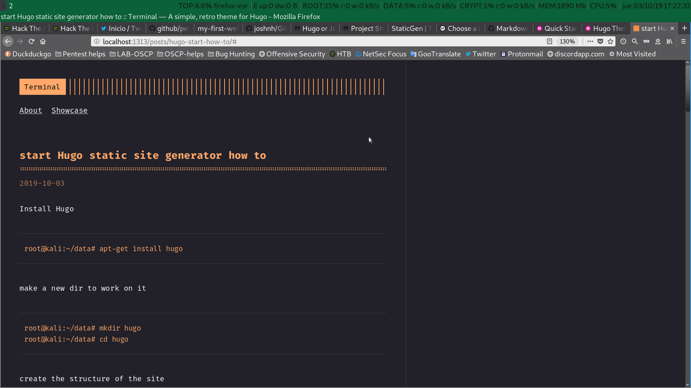

Starting With Hugo: Static site generator.
Table of contents
Why Hugo
I chose hugo after comparing the top static site gen and reading a couple of posts by jekyll vs hugo, everyone will have their preferences. This is the first SSG I use since for some I had to start, Hugo’s documentation is quite broad and easy to understand.
Hugo installation
Installing Hugo will depend on the operating system we have. In Devian it is as easy as using apt.
root@kali:~/data# apt-get install hugoAfter installing, we will create a new directory to work neatly.
root@kali:~/data# mkdir hugo
root@kali:~/data# cd hugoCreation of the site structure
With Hugo we can create a basic structure for the new website.
root@kali:~/data/hugo# hugo new site viel_losero
Congratulations! Your new Hugo site is created in /root/data/hugo/viel_losero.
Just a few more steps and you're ready to go:
1. Download a theme into the same-named folder.
Choose a theme from https://themes.gohugo.io/ or
create your own with the "hugo new theme <THEMENAME>" command.
2. Perhaps you want to add some content. You can add single files
with "hugo new <SECTIONNAME>/<FILENAME>.<FORMAT>".
3. Start the built-in live server via "hugo server".
Visit https://gohugo.io/ for quickstart guide and full documentation.Let’s see what basic structure created us.
root@kali:~/data/hugo# tree
.
└── viel_losero
├── archetypes
│ └── default.md
├── config.toml
├── content
├── data
├── layouts
├── static
└── themes
7 directories, 2 filesCreation of the git repository
Once the basic structure is created, we will enter the new website directory and start a git repository.
root@kali:~/data/hugo#
root@kali:~/data/hugo#
root@kali:~/data/hugo# cd viel_losero/
root@kali:~/data/hugo/viel_losero#
root@kali:~/data/hugo/viel_losero# git init
Inicializado repositorio Git vacío en /root/data/hugo/viel_losero/.git/A simple list will let us see the new .git repository,
root@kali:~/data/hugo/viel_losero# ls -la
total 4
drwxr-xr-x 9 root root 125 oct 3 15:08 .
drwxr-xr-x 3 root root 41 oct 3 15:08 ..
drwxr-xr-x 2 root root 24 oct 3 15:08 archetypes
-rw-r--r-- 1 root root 82 oct 3 15:08 config.toml
drwxr-xr-x 2 root root 6 oct 3 15:08 content
drwxr-xr-x 2 root root 6 oct 3 15:08 data
drwxr-xr-x 7 root root 119 oct 3 15:08 .git
drwxr-xr-x 2 root root 6 oct 3 15:08 layouts
drwxr-xr-x 2 root root 6 oct 3 15:08 static
drwxr-xr-x 2 root root 6 oct 3 15:08 themesInstalling a theme as a submodule
Hugo’s test server does not start without a theme, it will give us an error. To install a hugo theme as a git submodule we can download it from https://themes.gohugo.io/. Installing the theme as a git sub-module will allow us to keep it updated.
root@kali:~/data/hugo/viel_losero# git submodule add https://github.com/panr/hugo-theme-terminal.git themes/terminal
Clonando en '/root/data/hugo/viel_losero/themes/terminal'...
remote: Enumerating objects: 779, done.
remote: Total 779 (delta 0), reused 0 (delta 0), pack-reused 779
Recibiendo objetos: 100% (779/779), 1.91 MiB | 869.00 KiB/s, listo.
Resolviendo deltas: 100% (407/407), listo.Chosen the theme. I have chosen terminal for this test, we will copy the initial configuration as the creator suggests,
root@kali:~/data/hugo/viel_losero# cat <<EOF>config.toml
baseurl = "/"
languageCode = "en-us"
theme = "terminal"
paginate = 5
[params]
# dir name of your blog content (default is `content/posts`)
contentTypeName = "posts"
# ["orange", "blue", "red", "green", "pink"]
themeColor = "orange"
# if you set this to 0, only submenu trigger will be visible
showMenuItems = 2
# show selector to switch language
showLanguageSelector = false
# set theme to full screen width
fullWidthTheme = false
# center theme with default width
centerTheme = false
# set a custom favicon (default is a `themeColor` square)
# favicon = "favicon.ico"
[languages]
[languages.en]
languageName = "English"
title = "Terminal"
subtitle = "Vel006 public things"
keywords = ""
copyright = ""
menuMore = "Show more"
readMore = "Read more"
readOtherPosts = "Read other posts"
[languages.en.params.logo]
logoText = "Terminal"
logoHomeLink = "/"
[languages.en.menu]
[[languages.en.menu.main]]
identifier = "about"
name = "About"
url = "/about"
[[languages.en.menu.main]]
identifier = "showcase"
name = "Showcase"
url = "/showcase"
EOFCreating a test post
Installed the theme, we will create a new test post with the markup language Markdown, this is one of the features of Hugo publish files with extension md. For the new test post I will use this own .md file of notes on the installation and testing of Hugo.
root@kali:~/data/hugo/viel_losero# hugo new posts/hugo-start-how-to.md
root@kali:~/data/hugo/viel_losero# vi content/posts/hugo-start-how-to.mdOnce everything is ready, we start the local test server that comes with Hugo to see the result.
root@kali:~/data/hugo/viel_losero# hugo server -DFinally we will take a screenshot of the result and add it to the post.
root@kali:~/data/hugo/viel_losero# mkdir static/images
root@kali:~/data/hugo/viel_losero# cp /root/Imágenes/Captura\ de\ pantalla\ -2019-10-03\ 17-27-33.png static/images/hugo-dev.pngResult
Here we have the screenshot with the result of my first test with Hugo.

References:
License:CC-BY-SA